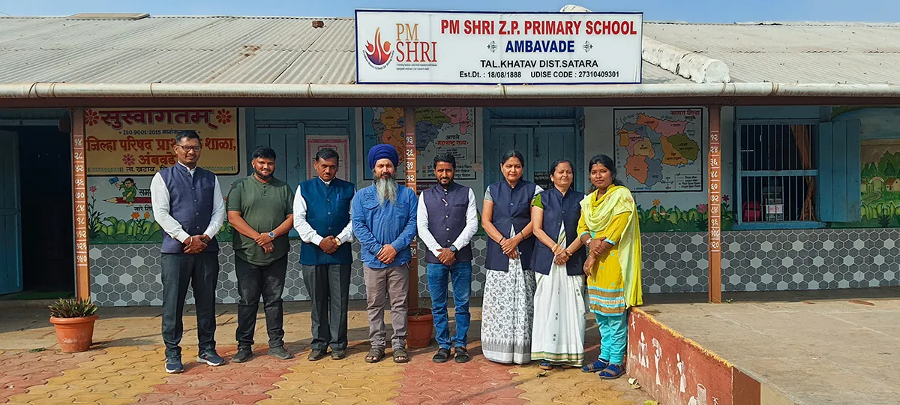
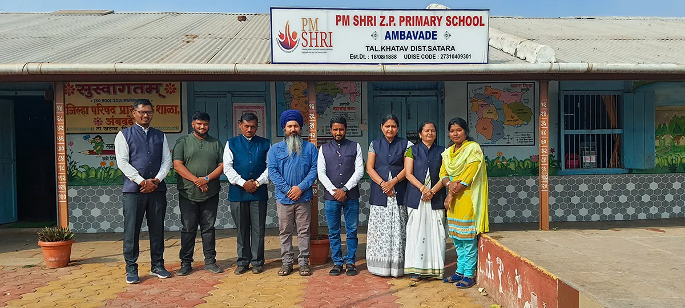
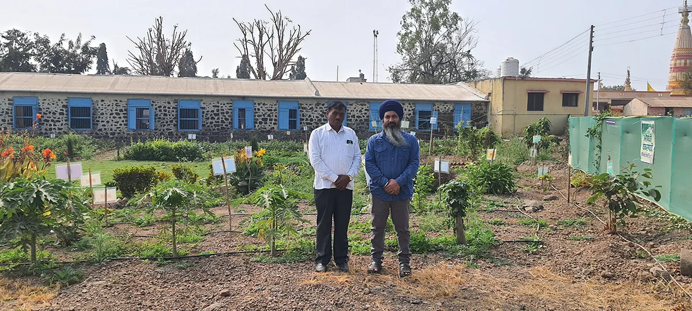

Beyond the Textbook.
Education is about connection, nature, and holistic growth. It's about a student plucking a flower from the school garden—a garden they maintain themselves—to say thank you.

School Nutrition Garden Project: Connecting mid-day meals to hands-on learning.